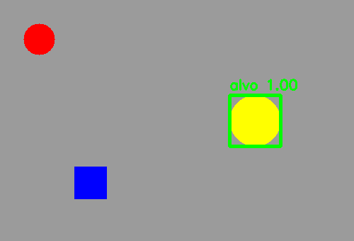

7. Template Matching e Haar Cascades¶
O que você aprenderá¶
Neste capítulo, você conhecerá duas estratégias clássicas de detecção que representam maneiras diferentes de definir “parecido”. O Template Matching procura uma aparência muito específica; a Haar Cascade procura padrões aprendidos de uma classe.
Ao final, você deverá conseguir:
- explicar Template Matching como busca por similaridade;
- compreender o mapa produzido por
matchTemplate; - interpretar
minMaxLoc; - diferenciar métricas baseadas em correlação e erro;
- compreender por que escala e rotação prejudicam templates rígidos;
- construir busca multiescala simples;
- explicar a ideia de características Haar;
- compreender o papel da imagem integral;
- explicar a lógica de uma cascata;
- interpretar
scaleFactor,minNeighborseminSize; - diferenciar correlação de probabilidade;
- compreender falsos positivos e falsos negativos;
- comparar situações adequadas para Template Matching, Haar e redes neurais.
Template Matching é uma técnica direta de correspondência por aparência. Viola e Jones (2001), por sua vez, mostraram que características Haar, imagens integrais, AdaBoost e cascatas permitem detecção eficiente de objetos, especialmente rostos frontais, em cenários controlados.
7.1 Duas noções de “parecido”¶
Template Matching¶
Pergunta:
“Em qual posição existe uma região visualmente parecida com esta pequena imagem?”
Haar Cascade¶
Pergunta:
“Em qual janela aparecem relações de contraste semelhantes às aprendidas durante o treinamento?”
Analogia¶
Template Matching é como procurar uma peça usando uma fotocópia em tamanho real.
Haar Cascade é como um porteiro treinado que faz uma sequência de perguntas rápidas sobre a aparência antes de permitir que um candidato avance.
7.2 O que é um template?¶
Template é uma pequena imagem de referência.
Ele precisa ser menor ou igual à imagem em que será procurado.
7.3 Como matchTemplate funciona conceitualmente?¶
O template é deslocado por todas as posições válidas da cena.
Em cada posição, é calculada uma pontuação.
O resultado não é uma imagem detectada pronta. É um mapa de pontuações.
Analogia: prova de encaixe¶
Imagine colocar uma transparência sobre uma fotografia e deslizá-la. Em cada posição, você mede o quanto as marcas coincidem.
7.4 Dimensão do mapa de similaridade¶
Se a imagem possui:
e o template possui:
então o mapa possui aproximadamente:
porque o template só pode ser colocado onde cabe completamente.
7.5 Encontrando a melhor posição¶
Para TM_CCOEFF_NORMED, normalmente interessa max_val e max_loc.
0,80 não significa 80% de probabilidade
Trata-se de uma medida de similaridade/correlação definida pelo método. Ela não é automaticamente uma probabilidade calibrada.
7.6 Desenhando a detecção¶
h, w = template.shape[:2]
x, y = max_loc
cv2.rectangle(
imagem,
(x, y),
(x + w, y + h),
(0, 255, 0),
2
)
7.7 Métricas diferentes mudam a interpretação¶
Alguns métodos buscam máximo; outros buscam mínimo.
Exemplos:
TM_CCOEFF_NORMED → maior costuma ser melhor
TM_CCORR_NORMED → maior costuma ser melhor
TM_SQDIFF → menor é melhor
TM_SQDIFF_NORMED → menor é melhor
Sempre confira a métrica antes de interpretar minMaxLoc.
7.8 Procurando múltiplas ocorrências¶
Em vez de escolher apenas o máximo:
locais = np.where(resultado >= 0.85)
for y, x in zip(*locais):
cv2.rectangle(
saida,
(x, y),
(x + w, y + h),
(0, 255, 0),
2
)
Isso pode gerar várias caixas sobre o mesmo objeto. Técnicas de agrupamento ou NMS podem ser necessárias.
7.9 Limitação fundamental: escala¶
Se o template mede 80 × 80 e o objeto aparece com 100 × 100, a correspondência pode cair muito.
Analogia: chave e fechadura¶
Uma chave com desenho correto mas tamanho errado não encaixa.
Uma solução simples é testar várias escalas.
O custo aumenta porque realizamos várias buscas.
7.10 Limitação: rotação¶
Um template vertical pode falhar quando o objeto gira.
Podemos criar versões rotacionadas, mas isso aumenta a quantidade de comparações.
Características locais, como veremos no próximo capítulo, lidam melhor com algumas dessas variações.
7.11 Limitação: iluminação e deformação¶
Mudanças intensas de:
- brilho;
- contraste;
- perspectiva;
- deformação;
- oclusão;
podem prejudicar uma comparação pixel a pixel.
Template Matching funciona melhor quando a câmera e o objeto são relativamente controlados.
7.12 De templates para características Haar¶
Viola e Jones (2001) propuseram um detector de objetos extremamente influente baseado em características simples de contraste.
Uma característica Haar compara somas de regiões claras e escuras.
Exemplo conceitual:
A diferença entre as duas somas produz uma característica.
7.13 Por que comparar regiões pode ajudar a detectar rostos?¶
Em muitos rostos frontais:
- região dos olhos tende a ser mais escura que parte das bochechas;
- ponte do nariz possui padrões de contraste específicos;
- testa e olhos formam relações espaciais recorrentes.
O classificador não procura “olhos” semanticamente; ele aprende combinações de contrastes que ajudam a separar positivos e negativos.
7.14 Imagem integral¶
Calcular soma de muitos retângulos diretamente seria caro.
A imagem integral permite obter a soma de qualquer região retangular usando poucos acessos, independentemente do tamanho do retângulo (VIOLA; JONES, 2001).
Analogia: tabela de soma acumulada¶
É como manter uma planilha em que cada posição já sabe o total acumulado até aquele ponto. Assim, calcular a soma de uma área deixa de exigir visitar todos os elementos internos.
7.15 AdaBoost e seleção de características¶
Existe uma quantidade enorme de possíveis características Haar.
AdaBoost seleciona características úteis e combina classificadores fracos em uma decisão mais forte.
A ideia didática:
muitas perguntas possíveis
↓
selecionar perguntas informativas
↓
combinar respostas
↓
decisão mais robusta
7.16 Cascata: rejeitar cedo para economizar¶
Uma cascata possui estágios.
janela candidata
↓
estágio 1 → rejeita muitos
↓
estágio 2 → rejeita outros
↓
...
↓
estágios finais → candidatos difíceis
Analogia: triagem em aeroporto¶
A maioria das situações simples é resolvida rapidamente. Apenas casos que continuam plausíveis seguem para inspeções mais custosas.
7.17 Carregando uma Haar Cascade¶
É importante verificar:
7.18 detectMultiScale¶
7.19 scaleFactor¶
Controla como a escala da janela muda.
Valor mais próximo de 1:
- busca mais detalhada;
- mais escalas;
- maior custo.
Valor maior:
- busca mais rápida;
- pode pular tamanhos relevantes.
7.20 minNeighbors¶
Múltiplas detecções próximas podem sustentar uma caixa final.
Aumentar minNeighbors tende a:
- reduzir falsos positivos;
- possivelmente aumentar falsos negativos.
Não existe valor universal.
7.21 minSize¶
ignora candidatos menores.
Isso pode economizar processamento quando sabemos que objetos muito pequenos não interessam ou não possuem resolução suficiente.
7.22 Falso positivo e falso negativo¶
Falso positivo¶
O algoritmo afirma que existe objeto, mas não existe.
Falso negativo¶
Existe objeto, mas o algoritmo não detecta.
Analogia: alarme¶
Um alarme muito sensível dispara com qualquer movimento. Um alarme muito rígido pode não disparar quando deveria.
Parâmetros controlam esse compromisso.
7.23 Template Matching versus Haar versus rede neural¶
| Cenário | Técnica plausível |
|---|---|
| logotipo rígido, câmera fixa, escala constante | Template Matching |
| rostos frontais em CPU limitada | Haar Cascade |
| grande variação de pose, escala e oclusão | detector neural |
| peça industrial com aparência exata | Template Matching pode ser suficiente |
| classe visual complexa | rede neural costuma ser mais adequada |
7.24 Exemplo integrado do capítulo¶
O código do capítulo 7 oferece uma experiência autocontida para Template Matching e demonstra o carregamento de Haar Cascade.
Pipeline:
cena sintética
↓
template
↓
mapa de similaridade
↓
melhor posição
↓
limiar de decisão
↓
busca multiescala didática
↓
Haar frontal
↓
detectMultiScale

7.25 Erros comuns¶
| Sintoma | Causa provável | Correção |
|---|---|---|
matchTemplate falha |
template maior que imagem | confira dimensões |
| pontuação cai ao redimensionar | escala diferente | busca multiescala |
| objeto girado não aparece | template rígido | versões rotacionadas/features |
| muitas caixas próximas | vários picos | agrupamento/NMS |
| interpretação invertida | métrica SQDIFF |
menor é melhor |
| Haar não carrega | caminho XML incorreto | teste .empty() |
| muitos falsos positivos Haar | minNeighbors baixo |
aumente e valide |
| objetos pequenos não aparecem | minSize alto |
reduza com cautela |
7.26 Perguntas de revisão¶
- O que
matchTemplateproduz? - Por que o mapa é menor que a imagem original?
0,9significa 90% de probabilidade?- Em
TM_SQDIFF, buscamos máximo ou mínimo? - Por que escala prejudica Template Matching?
- O que uma característica Haar mede?
- Qual é a vantagem da imagem integral?
- Por que uma cascata é eficiente?
- O que
scaleFactorcontrola? - O que ocorre ao aumentar
minNeighbors?
Exercícios de fixação¶
Exercício 1¶
Crie uma cena sintética com um quadrado e recorte-o como template. Localize-o com TM_CCOEFF_NORMED.
Exercício 2¶
Compare TM_CCOEFF_NORMED e TM_SQDIFF_NORMED. Mostre qual extremo deve ser usado.
Exercício 3¶
Redimensione o objeto da cena em +10%, +20% e +40%. Registre a pontuação.
Exercício 4¶
Rotacione o objeto em 15°, 30° e 60°. Registre a degradação.
Exercício 5¶
Implemente busca em cinco escalas do template.
Exercício 6¶
Insira três cópias do mesmo template na cena e detecte todas acima de um limiar.
Exercício 7¶
Explique por que aparecem múltiplas caixas sobre uma mesma ocorrência.
Exercício 8¶
Carregue a Haar frontal e confirme que .empty() é falso.
Exercício 9¶
Em fotografias autorizadas, varie minNeighbors de 2 a 8 e registre resultados.
Exercício 10¶
Varie scaleFactor entre 1.05, 1.1 e 1.3. Compare tempo e detecções.
Exercício 11¶
Construa uma tabela com verdadeiros positivos, falsos positivos e falsos negativos.
Exercício 12¶
Para três cenários diferentes, justifique tecnicamente a escolha entre Template Matching, Haar e detector neural.
Exercício 13¶
Explique por que uma ilustração que parece um rosto para uma pessoa pode não ser detectada por uma Haar Cascade treinada com fotografias.
Síntese¶
Template Matching é uma busca direta por aparência e funciona muito bem em ambientes controlados. Haar Cascades introduzem uma ideia diferente: uma classe pode ser reconhecida por combinações de características aprendidas e avaliadas em cascata. As limitações dessas técnicas ajudam a motivar métodos de características locais e redes neurais dos capítulos seguintes.
Referências¶
BRADSKI, Gary; KAEHLER, Adrian. Learning OpenCV: Computer Vision with the OpenCV Library. Sebastopol: O'Reilly Media, 2008.
SZELISKI, Richard. Computer Vision: Algorithms and Applications. 2. ed. Cham: Springer, 2022.
VIOLA, Paul; JONES, Michael. Rapid object detection using a boosted cascade of simple features. In: Proceedings of the IEEE Conference on Computer Vision and Pattern Recognition. 2001.